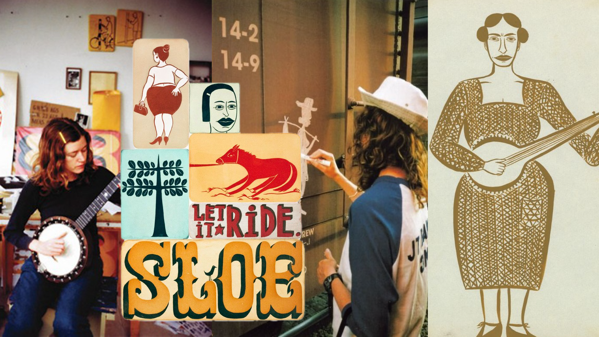

In 2013 I was in my second year of art school at Columbia College Chicago. On campus I took classes in creative writing, illustration, and printmaking, and I worked for the college booking student events, mopping galleries, and running audio for slam poetry competitions. Off campus I made zines, went to punk shows, and worked at a donut shop making coffee. My main manuscript was a young adult novel about a boy driving cross country in a stolen car to punch his dad in the face, and my visual art tended to consist of bold lined narrative drawings in black and white. I’d begun a collection of reference books on wildflowers, Texas gunslingers, American folklore, and uncommon idioms. I wish I remember which professor suggested Kilgallen’s work, they were bang on.
Margaret Kilgallen was born in Washington, DC, 1967. She moved to San Francisco after art school in 1989, biked around town, surfed, skateboarded, played the banjo, worked for the library preserving and restoring books, tagged the city with large scale paintings in a folk art style and the moniker META, was a prolific boxcar artist under as Matoki Slaughter, and a successful gallery artist. She made all of her work by hand and had a deferential preference to the things that people make themselves, “perfect” or preferably not. She argued that “graffiti” was far better for the visual and emotional human landscape than advertisements, which are for whatever reason totally above board.
To make a Margaret Kilgallen show I regarded her taste, interests, collaborations, and geography my impetus for exploration of new-to-me music and selections from my own collection.
I started with known heroines mentioned in an interview with Art21:
Additionally Kilgallen designed album cover art for two releases:
Then it was time to extrapolate.
I knew she loved old time music, and played the banjo. “Old time music” seemed vague to me… I thought “how old” or “what does that mean” and then I learned perhaps what was obvious to everyone else, old time music refers to the various styles of music that originated in rural America before records and radio were widely available. So, though the genre is a loose, the available recorded material has limits. Phew.
I imagined her touchstones for old time music might include Harry Smith’s Anthology of American Folk Music, originally released in 1953, and reissued in 1997. If were alive I think she would have loved the 2017 documentary series American Epic, lord knows I did. Between these two sources I had nearly 100 artists to check out.
I understand the appeal of these early recordings to Margaret Kilgallen, who said of her influences, “I like to choose people that just do small things and yet somehow hit me in my heart.” These are people who’d previously only played music for themselves or communities, sharing the music and stories of their lives to the rest of the world for the first time. Yeah, I cried. You ever seen a jug band? Can you believe that the love of making music and telling stories necessitated making instruments of jugs and washboards and gourds and buckets? Thinking a lot about this weird shit: Mikey Shulman saying that people don’t enjoy making music. What could music have to offer without the chafe of effort, the labor of love?
From there I filled up the show with music from my collection that checks at least a couple of these boxes:
To this end, you’ll note that I didn’t just put a Bikini Kill song on the show, I put in a song from Kathleen Hanna's Julie Ruin project in the 90’s that samples a Lesley Gore track. Kathleen Hanna, woman performing solo, an anachronistic feel, lo-fi recording, etc. I’m not saying this is some foundational mix, in fact I think it may be a ridiculous compilation, but it surely could never be generated by an algorithm and maybe you’ll find something you’d never considered listening to contextualized by something familiar.
Two weeks after finishing the song selections I’ve continued poring over resources and finding new things to connect to these thoughts… This is not likely to be the last you hear from me on old-time music, train markings, Margaret Kilgallen, American history, imperfections, and handcrafts, but I’ve decided that I probably don’t need to get it all into one write up about a silly mix.
When I talk about this blog I don’t know what to say. Does anyone need me to put together a collection of music I’ve been listening to? Why aren’t I just putting this down in a journal? I have a hard time saying that I write, and when I do I twist up my face when I try to say what I write about. Do I write about music? More than anything I’m organizing thought, having fun putting together all the things you can find when you don’t know what you’re looking for, trying to show my work, and maybe make you laugh.
I have a couple quotes from an essay by Eungie Joo that I think add context for my interest in her and for the touchstones I’ve selected for this show:
Her’s was not a centrist’s nostalgia, a longing for a perfect past. Rather she craved the texture of decline, to linger in the last breaths of endangered but determined forms of expression.
Kilgallen’s mark was her personal lore— a poetically layered figuration to outmatch any written or spoken tale. Relying on her many skills of craft, she offered us a glimpse of what is and was always there: everyday greatness and beauty, the ordinary yet exceptional life of each mother, exile, laborer, transient. Uncovering for a moment the quiet textures of existence, Margaret Kilgallen reminded us of the very magnitude of the quotidian.
-R
Margaret Kilgallen on the handmade
In the Sweet Bye and Bye, Elizabeth Cotten
Born on a Train, The Magnetic Fields
Going Down the Road Feeling Bad, Algia Mae Hinton
Variations on Easter, Robbie Basho
Undeclared, The Dodos
New Tea, Michael Hurley
Salty Dog Rag, Chet Atkins
Sometimes I Think I Love You, Memphis Jug Band
Sometimes, Poor Image
Romeo, Ovarian Trolley
Boxcar, Jawbreaker
U Bop, April Magazine
I See the Void, Sonny & The Sunsets
As the Sea Holds Creatures Vast and True, Tommy Guerrero
Stay Monkey, Julie Ruin
Lesley Gore on the T.A.M.I. Show, Casiotone For The Painfully Alone
Perfect Me (This Is Lorelei Remix), Deerhoof
Get Along Home Cindy, Matokie Slaughter
Kingdom Come, Cindy Lee
Margaret Kilgallen on the handmade
This is kind of The Big Kilgallen soundbite. A posthumous show of her work was titled “That’s where the beauty is,” I bought the book. It’s good for a reason. I love to hear her laugh as she invokes the word “perfect,” and to hear her voice catch right as she says “waver.”
Sweet Bye and Bye, Elizabeth Cotten
Elizabeth Cotten (1895-1987) was a lefty who learned to play guitar and banjo on her brother’s right handed instruments. We know her because in her late teens she was working at a department store in Washington D.C.(hey that's where Maggie's from!) and returned a young Peggy Seeger to her parents Ruth & Charles. Oh you know the Seeger family even if you don’t— Ruth was a musician, as well as a musicologist like her husband Charles, who’s generally regarded as the pioneer of ethnomusicology. Their kid Mike started up the New Lost City Ramblers and made recordings of many quintessential old-time musicians, and their other boy Pete was a real activist communiss folk singer with more credits on Folkways than I’m in the mood to list. After her run in with the family she took up working in the Seeger home, at one point Ruth came across Elizabeth playing the family guitar and knew she was important. Mike helped popularize her through recordings of her work and she played for congressmen, senators, JFK, everyone. While working on this mix I validated for myself the purchase of two coveted art books released alongside posthumous shows of Margaret Kilgallen, the first of which is titled In the Sweet Bye and Bye.
Born on a Train, Magnetic Fields
I think Magnetic Fields suits the mix for more than the train reference, a kind of homemade ethos, folk inspired lyrics, and that extended delay on the twangy bass sounds like that on the jug band track we’ll hear in a bit.
Going Down the Road, Feeling Bad, Algia Mae Hinton
This song is a variation on a common song that can be called “Going Down the Road, Feeling Bad” or “Lonesome Road Blues.” The song often sounds the same, but with lyrics changed by the performer to share their own blues. Algia Mae Hinton references the tradition in this recording, mentioning a guy she met in St. Louis who sang the song like “If I ain’t got you, I don’t want nobody yeah.” Her version of the song is not so lovelorn, as it’s in reference to her experience of the deep nowhere to go blues of her house burning down. Margaret saw a video of Hinton flat footing the rhythm of a song while playing her guitar behind her back and atop her shoulders, featured in Mike Seeger’s 1984 documentary Talking Feet.
Variations on Easter, Robbie Basho
I came across Robbie Basho for the first time while making this mix, looking to bridge the space between old time music and today with traditional American guitar techniques. When I think of American guitar my mind goes to John Fahey, but I wanted more connective tissue to my subject. Enter Basho who, like Kilgallen, was born in Maryland and died young in San Francisco. What a treasure trove of Shit I Like. He described his work at times as Zen-Buddhist-Cowboysongs, was foundational to new age music as he was very inspired by Indian ragas music, and had these brilliant synesthetic sensibilities, outlined in “The Esoteric Doctrine of Color and Mood for 12 and 6 String Guitar,” pictured below.
Undeclared, The Dodos
Visiter was major to me when it came out. I was recently reminded of it while tuned into myrrh.radio.fm, a 24 hour live stream of what seems to be Myrrh Sewell’s personal collection. You have got to check out this website myrrh.city, it’s so on theme, hand coded and filled with hand made collages, photographs, drawings, schematics for a live-in van, archived notes, a short animated film, a link to the aforementioned radio, a guide for weaving a fishing net. Also The Dodos are from San Francisco.
New Tea, Michael Hurley
This song strikes me as a Lonesome Road Blues type track. Michael Hurley lets out these wails that say more than words… like the feeling of that lonesomeness was etched upon his vocal chords and just running air across them naturally blew out this perfectly succinct expression. I love this recording specifically because of all the non-song parts: Laughter of a friend in the background, the occasional foot tap along with the beat, a chair creaking under Hurley’s body. Here the line wavers. It’s warm. I can smell milk boiling on the stove for a cup of chicory coffee. Take a seat and stay a while.
Salty Dog Rag, Chet Atkins
The Salty Dog Rag, or Salty Dog Blues has been played by many, I picked this recording because I found a copy of Down Home last month at Academy Records. Salty Dog refers to this Appalachian practice of rubbing salt on one’s best hunting dog to protect it from ticks. In that way it kind of means like a “favorite” or a “best pal.” In some versions of the Salty Dog Blues, “salty dog” is assumed to mean something like “promiscuous man.” Here’s how I take it: He’s your favorite dog, you love him for what he is and you wouldn’t dare keep him on a tight leash. He’s on his own in tall grass among the ticks and fleas. Out of love you rub some salt along his collar and wish him well until you see him again. A salty dog ain’t a scoundrel, he’s a lovable tramp. Anyway, this episode’s dog reference in the bag.
Sometimes I Think I Love You, Memphis Jug Band
Jug bands are so sick. Maybe my new favorite thing to search on Youtube. Memphis Jug Band gained some popularity in the 20’s and then again during the folk/blues revival in the 50’s. A song of theirs “Stealin’ Stealin’” was also covered by a popular San Francisco outfit Grateful Dead.
I picked this song for this mix because its title and its lyrics felt reflected in the following track.
Sometimes, Poor Image
I mentioned this song last month, calling out its fiddle part. Have I mentioned how much I love this album? San Francisco band baby!
While we’re talking about last month, did you know that steel guitar originated in Hawaii? Check this anecdote from American Epic: Joseph Kekuku was walking along the railroad tracks (trains!), picked up a loose railroad tie and put it in his pocket. As he walked along with his old Spanish guitar, the tie brushed up against the metal strings and produced an exciting new tone. He practiced with the tie, the back of a pocket knife, the back of a steel comb, and then a polished steel bar, much like what we use today. Then he taught it to others on the island. It defined Hawaiian music and, when it made it to the mainland, totally transformed country and blues. So cool.
Romeo, Ovarian Trolley
This is the first time I’ve put a song I’m not crazy about on a show. I don’t consider myself an expert enough on music to be a critic— I’ll say that the guitar run is a cool dirge and the vocal tricks are interesting, but neither are well executed enough to listen to multiple times over the course of a five minute song, so I interrupted it with some train sounds. This clip is here because Margaret Kilgallen designed the cover for this song’s side of a split.
Side 1 Cut 1, First Generation Diesels Volume 18
When I say I would rather listen to 45 minutes of train sounds than a single second of an AI generated song I fucking mean it. One of my favorite audio experiences is listening to country music inside a car while waiting for a train to pass, muffled sounds of crossing bells and freight speeding past. This cut is the sound of a Fairbanks-Morse Senior Train Master model H-24-66 passing through San Mateo on the way to San Francisco. I wonder if it ran long enough for Margaret Kilgallen to mark it.
How do I make this joke? Train sounds to hitch the Boxcar (next track) to the Ovarian Trolley (artist of previous track). It’s funnier in my head.
Boxcar, Jawbreaker
I love early Jawbreaker, punk rock, not being punk enough, and cool cigarette smoking blue haired chicks with inanimate nicknames. Also a San Francisco band.
Between the “buck toothed girl” reference in Romee and the scrappy titular Boxcar, I think of Kilgallen’s hope to inspire young women: “I’d like to change the emphasis of what’s important when looking at a woman. I often feel like so much is put on how beautiful you are, and how thin you are, and not a lot of emphasis is put on what you can do.” Her art included figures of surfers, banjo players, smokers, bottle breakers, drinkers, fighters, fat lips, and bruises. Her idea of how to look at a woman wasn’t just some boilerplate feminist talk, she depicted women’s power, prowess, sorrow, spite, rage, and rowdiness.
U Bop, April Magazine
Rory Bowens turned me on to April Magazine by way of his NTS show, The Slip. San Francisco shoe gaze!
I See the Void, Sonny & The Sunsets
Longtime Companion is my favorite Sonny & The Sunsets album, of course I like the country one! San Francisco band, homemade recordings, anachronistic references. Here’s a quote from a Pitchfork review of a different album that I liked:
His songs have an enormously appealing loose, homespun quality-- muffled, refracted, self-aware takes on the starry-eyed, innocent sounds you hear coming from oldies radio.
Sonny Smith also collaborated with Peggy Honeywell, performance moniker of Clare Rojas, fellow member of the Mission School artists, friend of Margaret Kilgallen, Barry McGee’s second wife.
As the Sea Holds Creatures Vast and True, Tommy Guerrero
Margaret Kilgallen was the coolest. She did the cover for this album by Tommy Guerrero: a San Franciscan pro skater cum groovy tune lord.
Stay Monkey, Julie Ruin
I talked about this one in the forward, but just a reminder because it makes the next selection more fun: This song samples “Coolin’ No Foolin’” by Lesley Gore.
Lesley Gore on the T.A.M.I. Show, Casiotone For The Painfully Alone
Ayyy, look at that! Anachronistic reference on the homemade recording by a San Franciscan artist. Casiotone For The Painfully Alone (and Owen Ashworth in general) is what I would call foundational to my taste. I saw the last CFTPA show ever in NYC when I was 16 years old.
Perfect Me (This Is Lorelei Mix), Deerhoof
What a thrill to throw this on. To put it simply, Deerhoof is a San Francisco band. To put it thematically, the lyrics in this one are so “folk song.” To put it personally, the first time I saw Deerhoof was also the same week I first saw CFTPA. To put it swaggily, This Is Lorelei’s guitar on this goes so fucking hard. To put it maybe pretentiously, I also feel like covers, remixes, etc. falls into that same tradition of old time music— hearing someone’s covered ground you’d like to tread, and treading it too, building upon it.
When I say the lyrics in this feel like an old time folk song, I want to share an excerpt I liked from an essay by Alex Baker:
Not only did Kilgallen look to Old Time music for artistic inspiration, her art shares some of the narrative attributes of the music itself. Kilgallen used seemingly fragmented words that resemble the syntactic structure of a “folk-lyric” song. According to critic Greil Marcus, this type of song “was made up of verbal fragments that had no direct or logical relationship to each other, but were drawn from a floating pool of thousands of disconnected verses, concepts, one-liners, pieces of eight.” In the folk-lyric song, the singer “sings his or her own life,” building a unique, idiosyncratic narrative as the song moves forward. Marcus describes Clarence Ashley’s rendition of “Coo Coo Bird,” a traditional English song that was carried on into the folk music of rural America, as one in which “narrative is implied, but altogether missing, replaced instead by hints and gestures, code words and winks, a whole music of secret handshakes.” The Old Time folk-lyric song and Kilgallen’s art share a spontaneity and an improvised narrative as well as a predilection for the arcane shrouded in the accessible.
While we’re on about Deerhoof, I want to talk briefly about Caroliner. Deerhoof’s early shows were played opening for different iterations of Caroliner, whose name changes with each release, as the anonymous costumed members rotate through the band. I did not put any of their songs on this mix because frankly they’re really fucking freaky. Caroliner feels like present day Old Time music, like music made in the woods with instruments and non instruments based only on the idea of what music sounds like. The lyrics are often creepy tales that sound like they might come out of the mouth of an antique doll. Though not on the show they belong in this write up.
Get Along Home Cindy, Matokie Slaughter
I only learned of Matokie Slaughter because of Margaret Kilgallen’s prolific use of her name and imagined visage in her work. I chose this recording because its title tied me to where I wanted to end the show.
Yesterday, weeks after finalizing tracks for this show, I watched Who is Bozo Texino? 2005, a film about boxcar artists, and a rendition of “Get Along Home Cindy” by another artist was featured in the background. It felt like I’d reached into a void of interest and brushed against another doing the same thing.
Kingdom Come, Cindy Lee
Get Along Home Cindy Lee. That’s the joke, thanks.
In lots of ways this fits— Cindy Lee is a solo performer, en femme, ripping it on a stringed instrument, telling simple, heart-touching stories. Also the cover of this double LP has an old freight train on it. This song specifically bookends with “Sweet Bye and Bye” as a call to seeing someone on the other side of where we are. It makes me feel emotional in perhaps an overly familiar way, but I do miss Margaret. I wish we could have seen more of her work, that she would have tagged the many offices that went up in San Francisco between 2001 and now, that we could have heard her talk shit on our inundation with advertisements (“mind garbage” as she called them) and rally against generative AI as a proponent for the handmade.
I wonder if she would have found this mix interesting. I hope you did!
additional media:
Tagging a Train Yard with Barry McGee & Margaret Kilgallen, Art21
Margaret Kilgallen: Heroines, Art21
American Epic
Algia Mae Hinton in Talking Feet
Robbie Basho Archives
myrrh.city
The Slip on NTS
Caroliner
Who is Bozo Texino?
I also picked up Margaret Kilgallen : In the Sweet Bye & Bye (source for the Eungie Joo quotes), Margaret Kilgallen : that’s where the beauty is, Bill Daniel’s “Mostly True”, was gifted a copy of a zine of Kilgallen’s work called “Inside Out,” I’ve got copies of the films I mentioned, etc… If you want to come by for a cup of tea and take a look I’d be over the moon to explore together. :)